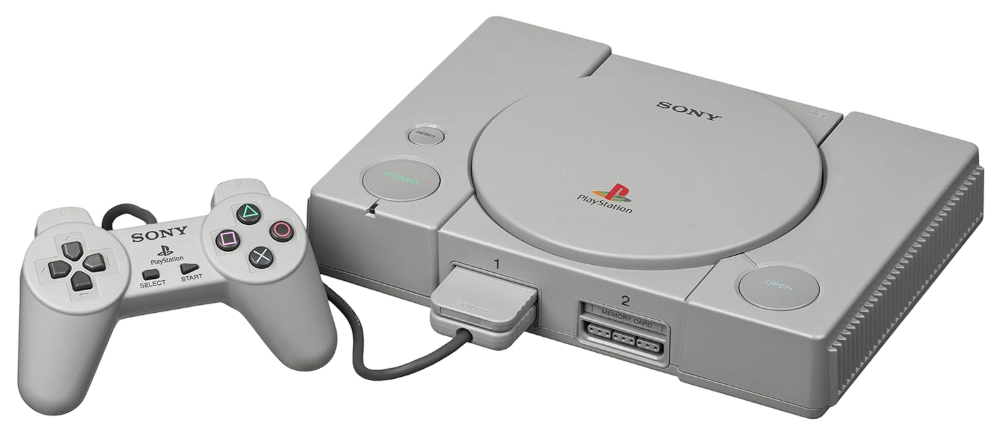

PlayStation Generacion 1 PS1 Color Estandar Gris Nueva

---$2,225 mxn---
Envio ($)
Descripcion
lanzada por Sony en diciembre de 1994 en Japón y en 1995 en el resto del mundo, marcó un antes y un después en la historia de los videojuegos. Fue la primera consola de videojuegos de Sony, y su lanzamiento significó la entrada de la compañía en un mercado dominado por Nintendo y Sega.
Características destacadas de la PS1:
Hardware innovador para su época: La PS1 era una consola de 32 bits, lo que permitía una mayor capacidad de procesamiento gráfico y sonoro en comparación con consolas anteriores como la Super Nintendo o Sega Genesis. Su arquitectura fue revolucionaria para la época, permitiendo gráficos 3D de calidad y grandes avances en los juegos de aventura y acción.
Almacenamiento en CD: En lugar de utilizar cartuchos, la PS1 usaba CD-ROMs, lo que permitió almacenar juegos con mucho más contenido, como secuencias de video y música de alta calidad. Esto representó un salto significativo en términos de capacidad de almacenamiento y experiencia multimedia.
Gran catálogo de juegos: Durante su vida útil, la PS1 contó con más de 2,400 juegos, algunos de los cuales se convirtieron en auténticos clásicos, como Final Fantasy VII, Metal Gear Solid, Gran Turismo, Crash Bandicoot, Tekken 3, y Castlevania: Symphony of the Night. Estos juegos ayudaron a establecer la PS1 como una de las consolas más exitosas y queridas de la historia.